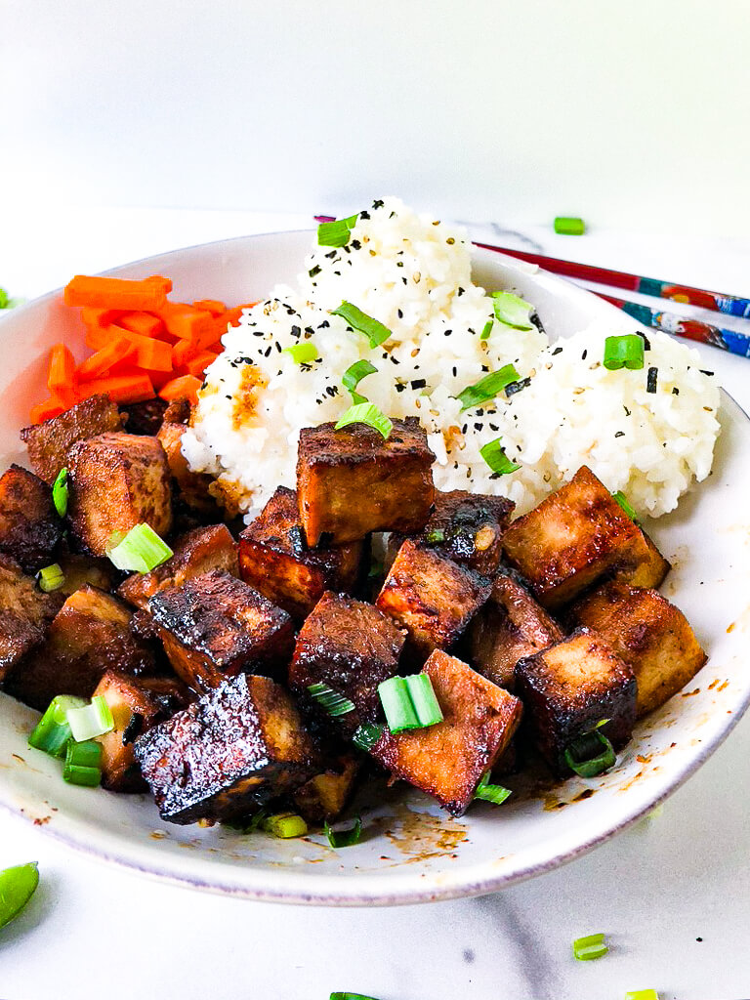

Crispy Tofu Bowl

A household favorite! This is a simple tofu recipe
that takes few ingrediants and is perfect for a busy week night.
Modify any of the toppings for a unique bowl everytime.
Ingrediants
-
1 16-ounce block extra firm tofu
-
4 tablespoons nutritional yeast
-
3 tablespoons soy sauce
-
1 teaspoon sriracha
-
1 tablespoon olive oil
Steps
-
Press and drain the tofu
-
Cut the tofu into 3/4 inch cubes.
In a large bowl, combine soy sauce, nutritional yeast, sriracha, and olive oil. Season
with black pepper. Add tofu cubes, toss, and marinate at least 30 minutes.
-
Heat the oven to 400 degrees F. Place tofu cubes in an even layer on oiled baking sheet.
Bake 30-40 minutes until golden, flipping half way.
-
While tofu is baking, make white rice.
-
Serve tofu over rice, garnish with sesame seeds and chopped scallions.